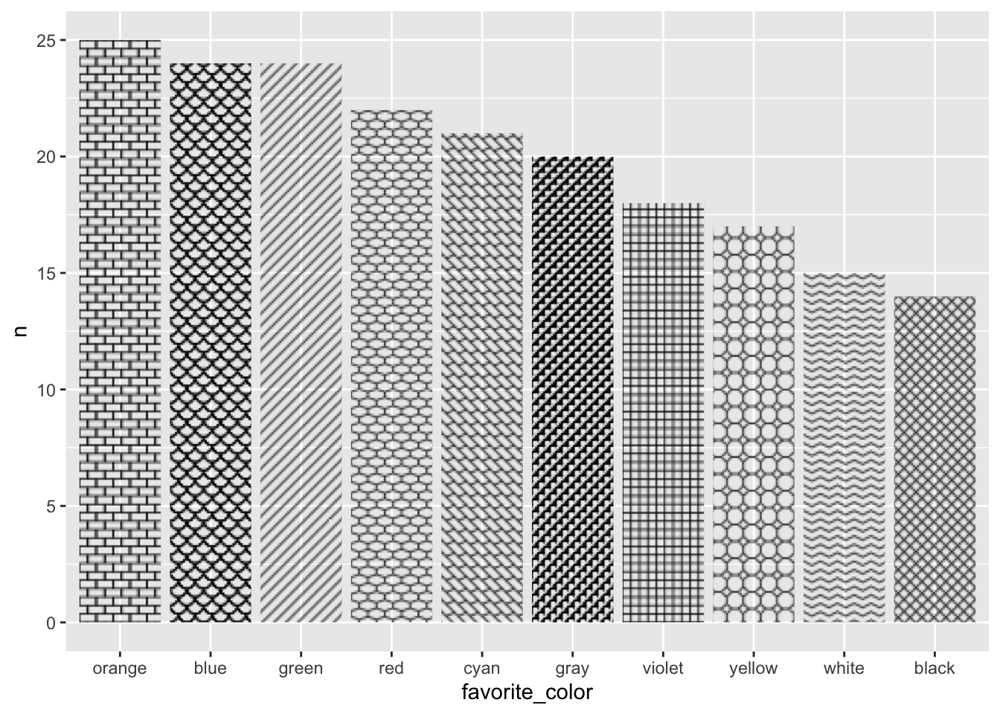
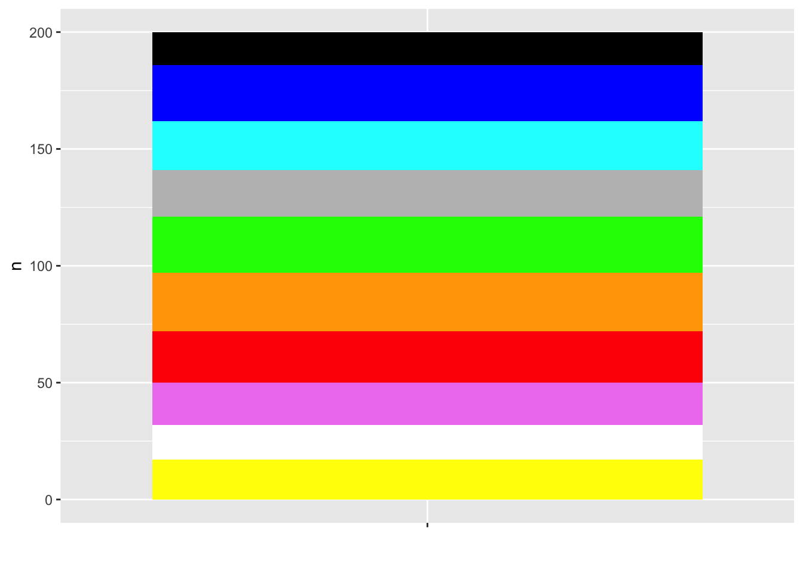
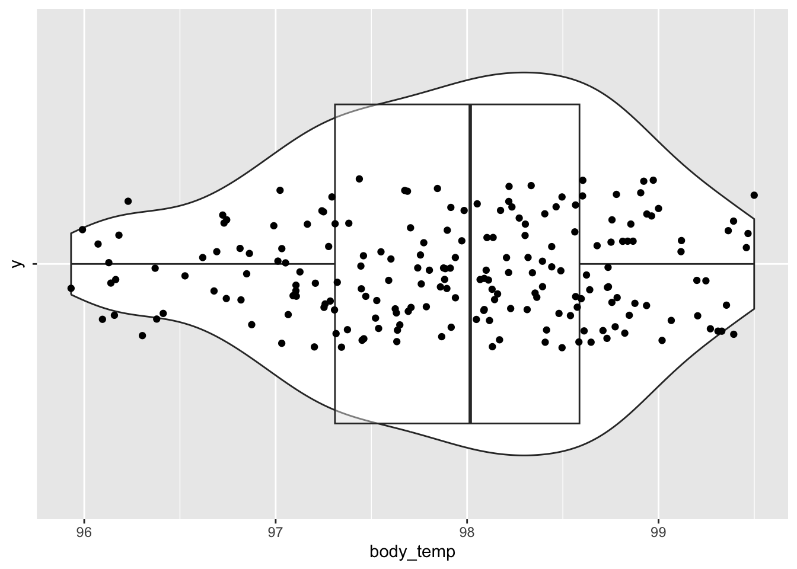

From stimulus to sensation
2025-02-11
Bar/column


Stacked vs. Lollipop


1D summaries of continuous data


Information at a distance

James Webb space telescope deep field “Webb’s first deep field (NIRCam image)” (n.d.)
Nature’s speed demon/speed limit
- Light (+ radiowaves) circumnavigate the Earth in ~133 ms

https://w3tm.org
- Earth ~8.3 light-minutes from the Sun

Cairo (2013) Figure 5.12
Electromagnetic spectrum

EM spectrum from Wikipedia
Surfaces reflect/absorb or emit

Source: https://www.cns.nyu.edu/~david/courses/perception/lecturenotes/color/color-slides/Slide14.jpg
Different surfaces == Different reflection/absorption
- Perceived color differences correspond to different patterns of light reflection.

Randeberg (2005)
Spatial patterns on retina
- depend on object geometry and orientation

Source: https://thebrain.mcgill.ca

Source: https://thebrain.mcgill.ca
The eye

is like an auto-focus, auto-exposure camera…

The retina…

- samples spatial patterns of light intensity & wavelength patterns
‘Wavelength-tuned’ photoreceptors

Source: Wikipedia

Retinal rods (green) & cones (blue)
…arranged in mosaics

Normal color vision vs. protanopic (color blind) vision; Source: https://en.wikipedia.org/wiki/Retinal_mosaic
with different concentrations in different parts of the retina

Wikipedia
…when eye misshapen for cornea +lens


Contrast sensitivity function

Pelli-Robson Contrast Sensitivity Chart
Color perception
- Perceived color a function of activity in “R”, “G”, and “B” photoreceptors
Source: Wikipedia
Wavelengths are continuous, but are perceived colors?

https://rmit.pressbooks.pub/colourtheory1/part/2-colour-theory-the-visible-spectrum/
Perceived colors seem ordinal, but…

- Color is a neuropsychological construct
Color vision anomalies
- Absence of or anomalies in photoreceptors

Wong (2011) Figure 1
Types
- Protanopia (impaired R/long wavelength)
- Deuteranopia (impaired G/medium wavelength)
- Tritanopia (impaired B/short wavelength)

Color palettes

Wong (2011) Figure 2